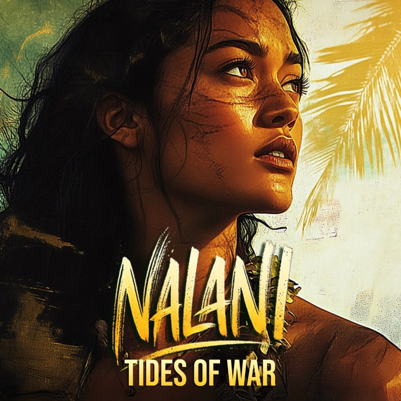

WORLDMATAALA
VOICENALANI
MOVEMENTFirst Contact
Tides of War
First Contact · A cinematic music video and short film from a 19th-century Polynesian historical fiction
The Scene
Soft as an island eulogy. The first sails break the horizon while her people still dance on silver sand, and Nalani reads the hunger behind the traders’ silk and lies, already counting the true cost of welcome. A full short film in feel and story.
Lyrics
The tide is rising the air grows thin
The earth still sleeps
But the war drifts in
I walk through shadows
Between the past
Holding secrets no soul should mask
The sun-kissed waves touch silver sands
My people dance with careless hands
But I have seen the traders' eyes
A hunger masked in silk and lies
They come with iron
They come with chains
With ledgered words
and poisoned names
They steal an inch
They take a mile
And when we wake
We've lost our isle
I know the game
I play my hand
A step too fast
Our fate is damned
They think me blind
They think me weak
But I have learned…
The world they seek
I know the game
I play my hand
A step too fast
Our fate is damned
They think me blind
They think me weak
But I have learned…
He world they seek
I am the tide the storm unseen
No chains will bind the fire in me
I walk alone between the past
A queen of war
My fate holds fast
My father speaks with wisdom deep
Yet cannot see the wolves that creep
The council laughs their hearts at peace
But I have stood where shadows feast
I walk the halls of foreign men
I drink their words
I play their hand
A careful pawn
Within their scheme
I dance the steps
Unseen serene
Unseen serene
Strike too soon
We fall like leaves
Strike too late
We choke on grief
I watch
They wait
They think me tame
But I have learned their brutal game
I am the tide the storm unseen
No chains will bind the fire in me
I walk alone between the past
A queen of war
My fate holds fast